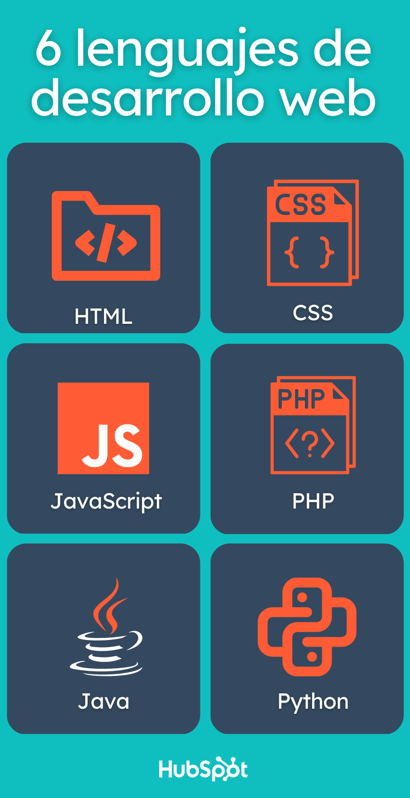

¿Qué es el desarrollo web?
Se conoce como desarrollo web al proceso de crear y mantener un sitio web que sea funcional en internet, a través de diferentes lenguajes de programación, según el modelo y la parte de la página que corresponda. Cada sitio tiene una URL única que lo distingue de los demás en la red informática mundial. Un sitio web puede clasificarse de diferentes formas. Para cuestiones de desarrollo web principalmente se divide en dos partes.
Frontend: Es la parte que interactúa con el usuario, tanto en imagen como en función. Por ello está íntimamente relacionada con la experiencia del usuario (UX) y la interfaz de usuario (IU).
Backend: Se refiere a la parte que está en contacto directo con el servidor; es donde se aplica el código de programación para crear la estructura. Permanece en un segundo plano a cargo de la accesibilidad, actualización, bases de datos y cambios del sitio.
Los desarrolladores Full Stack tienen el conocimiento y las habilidades para trabajar en ambas áreas del desarrollo web: el frontend (interfaz del usuario) y el backend (lógica del servidor y bases de datos).
El desarrollo Full Stack abarca tanto el lado del cliente como el del servidor. Esto significa que un desarrollador Full Stack puede crear sitios o aplicaciones completas desde cero, comprendiendo cada parte del proceso.
Un buen desarrollador Full Stack debe conocer:
Además, los desarrolladores Full Stack participan en todo el ciclo de desarrollo
Lenguaje utilizados para el Desarrollo Web:
1. HTML
El HTML es uno de los lenguajes de programación más importantes que se usa en el frontend de un sitio. Su escritura ayuda a dar estructura y organización al contenido de una página web, a través de una acomodación tipo árbol. Se configura por medio de etiquetas o hipertextos que permiten que los sitios web se encuentren en los motores de búsqueda.
2. CSS
El nombre extendido de CSS es Cascading Style Sheets, en español significa hojas de estilo en cascada. Este es un lenguaje de programación que trabaja en perfecta armonía con el HTML en el frontend. Para los programadores web es una herramienta muy útil para especificar el aspecto y la posición de los elementos en el sitio.
3. JavaScript
Uno de los lenguajes más apreciados es JavaScript, ya que con él es muy fácil crear sitios interactivos y dinámicos (como animaciones, formularios, juegos, galerías, botones, etc.), los cuales son muy demandados hoy en día. Su código también se refleja en el frontend. Se basa en objetos que se pueden acomodar y reutilizar de forma sencilla.
4. PHP
En el lado del backend tenemos el código PHP, uno de los pioneros de la transición de sitios fijos a sitios interactivos. Es uno de los lenguajes más utilizados por ser de código abierto, con casi 30 años de trayectoria; también es considerado uno de los más extensos que hay. Puede ser incrustado en el HTML sin ningún problema.
5. Java
Una de las grandes ventajas es que se escribe una sola vez y se puede ejecutar en distintos dispositivos y sistemas operativos, gracias a su máquina virtual (JVM). Corresponde al backend de una aplicación web. Tiene un código eficiente, memoria automática y detección de errores oportuna.
6. Python
Python es uno de los lenguajes de desarrollo web más innovadores que hay hasta el momento, debido a su característica multiparadigma, que es capaz de adaptarse a varios estilos de programación y crear aplicaciones de cualquier tipo. Es de código abierto y su escritura es muy parecida al lenguaje humano. Forma parte del backend de un sitio.